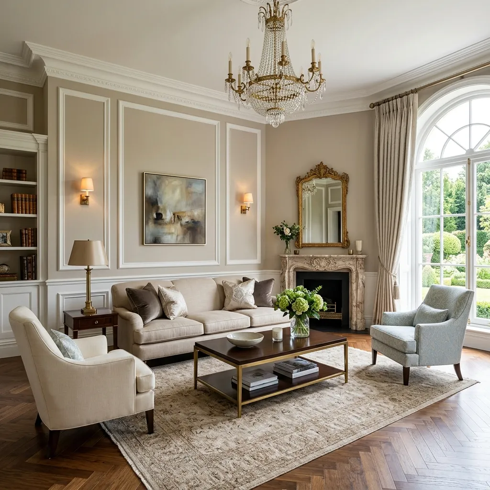
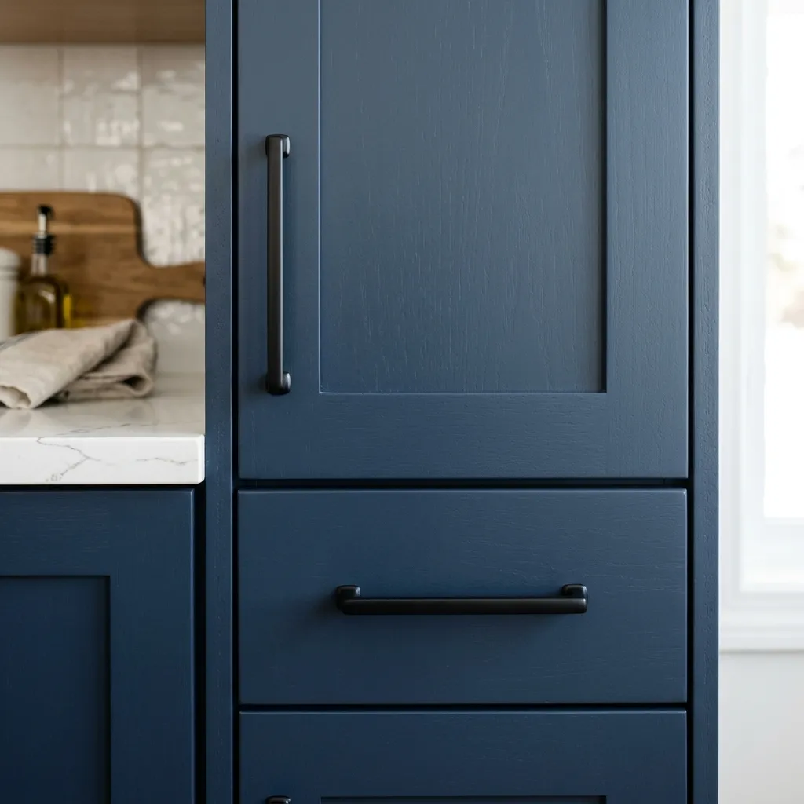

How to Make Your Home Look Expensive on a Budget: 15 Brilliant DIY Hacks
Have you ever scrolled through Pinterest or flipped through an interior design magazine, sighed wistfully at a stunning, high-end living room, and thought, "I could never afford that"? You are not alone. It is a common misconception that creating a beautiful, magazine-worthy home requires a limitless budget, a professional interior designer, and a taste for imported Italian marble.
Here is the best-kept secret of the interior design world: Luxury is a feeling, not a price tag.
Making your home look expensive has very little to do with how much money you spend, and everything to do with how you curate, customize, and style your space. With a little bit of creativity, some elbow grease, and a weekend of DIY (Do-It-Yourself) magic, you can completely transform your home from builder-grade basic to custom-built chic.
In this ultimate guide, we are going to dive deep into the art of budget luxury. We will explore 15 brilliant, highly effective DIY hacks that will trick everyone into thinking you hired a high-end designer. Grab a paintbrush, roll up your sleeves, and let’s start elevating your living space.

The Philosophy of "Budget Luxury"
Before we jump into the tools and techniques, it is crucial to understand the mindset behind budget luxury. High-end design is defined by a few key characteristics: intentionality, scale, texture, and custom details.
When you walk into a multi-million-dollar home, you rarely see blank, flat walls or generic plastic light switches. Instead, you see walls with architectural character, hardware with weight and patina, and furniture that looks perfectly scaled for the room.
The beauty of DIY is that it allows you to add these custom details without paying the hefty premium of skilled labor. A can of paint costs $30, but the transformative power it has on an outdated wooden dresser is priceless. By focusing your budget on high-impact areas—like lighting, hardware, and wall treatments—you can achieve a high-end aesthetic on a shoestring budget.
15 Brilliant DIY Hacks to Elevate Your Space
Ready to transform your home? Here are 15 actionable, budget-friendly DIY projects that deliver massive visual impact.
1. Upgrade Your Cabinet Hardware (Kitchen & Bath)
This is arguably the easiest and most effective hack in the book. Builder-grade kitchens and bathrooms often come with cheap, generic, silver-toned hardware (or worse, no hardware at all).
THE DIY FIX
Swap out those basic knobs and pulls for something with character. Matte black, brushed brass, or antique gold hardware instantly makes standard cabinetry look custom-made. You can find stunning, affordable hardware multipacks on Amazon or at local hardware stores. All you need is a screwdriver and 30 minutes.

2. Add Architectural Details with Picture Frame Molding
Empty, flat walls can make a room feel boxy and unfinished. High-end homes often feature intricate millwork, wainscoting, or wall paneling.
THE DIY FIX
You can recreate the look of expensive Parisian apartments by installing picture frame molding. You can use affordable pine trim from the hardware store, cut it to size with a miter box, and attach it to the wall using a brad nailer (or even strong construction adhesive). Paint the molding the exact same color as the wall for a sophisticated, custom-built look.
3. The Power of Paint: "Color Drenching"
Accent walls are slowly phasing out of high-end design. Instead, designers are embracing "color drenching." This means painting the walls, the baseboards, the window trims, and sometimes even the ceiling all in the exact same color.
THE DIY FIX
Choose a rich, moody color (like deep sage green, navy blue, or charcoal) or a warm, creamy neutral. Paint every element on the wall in this single hue. This eliminates visual breaks, making the room look infinitely taller, cozier, and wildly expensive.
4. DIY Textured Canvas Art
Large-scale artwork is notoriously expensive, often costing hundreds or thousands of dollars. But small art can make a room look cluttered and cheap.
THE DIY FIX
Buy a large, cheap canvas from a craft store (or thrift an old painting). Buy a tub of drywall joint compound or plaster of Paris. Use a putty knife to spread the compound across the canvas in thick, sweeping, abstract motions. Let it dry, and paint it a crisp matte white or a moody taupe. You now have a piece of minimalist, textured art that looks like it belongs in a high-end gallery.
5. Fake Built-Ins with IKEA Billy Bookcases
Custom carpentry and built-in shelving units are the ultimate sign of a luxury home, but they come with a massive price tag.
THE DIY FIX
The "IKEA Hack" is famous for a reason. Purchase basic IKEA Billy bookcases and line them up against a wall. Use cheap MDF boards to build a frame around the bookcases, attaching them securely to the wall and ceiling. Add crown molding to the top and baseboards to the bottom. Once you caulk the seams and paint everything a unified color, they look exactly like $5,000 custom built-ins.
6. Swap Out Builder-Grade Light Fixtures
Lighting is the jewelry of your home. If you still have the generic flush-mount "boob lights" that came with your house, they are dragging down your aesthetic.
THE DIY FIX
Learn how to safely change a light fixture (it is much easier than you think, just remember to turn off the breaker!). Swap outdated fixtures for modern chandeliers, sleek pendants, or woven rattan domes. You can find incredible dupes for high-end lighting on websites like Wayfair or Amazon for under $100.
7. Spray Paint Outdated Metal Accents
Does your home have an abundance of shiny, 1990s brass on the doorknobs, hinges, or fireplace surrounds? Replacing all of that metal can cost a fortune.
THE DIY FIX
High-heat enamel spray paint (like Rust-Oleum) is a lifesaver. You can tape off your fireplace glass and spray the brass trim matte black for an instant modern update. You can also remove doorknobs and hinges, stick them in a piece of cardboard, and spray them oiled-bronze or matte black.
8. Create a Faux Marble Countertop
Replacing ugly, outdated laminate countertops with real stone can consume your entire renovation budget.
THE DIY FIX
If you are renting or simply saving up for a real renovation, use architectural-grade marble contact paper to wrap your countertops. If applied carefully with a squeegee and a hairdryer (to stretch it around corners), it looks incredibly realistic. For a more permanent DIY, epoxy countertop kits can mimic the look of poured concrete or marble for under $200.
9. Reupholster Old Dining Chairs
Have you found a set of dining chairs with great "bones" but terrible, stained, 1980s floral fabric?
THE DIY FIX
Reupholstering a basic drop-in dining chair seat is incredibly easy. Unscrew the seat from the frame, cut a square of beautiful, high-end fabric (like bouclé, velvet, or faux leather), stretch it tightly over the cushion, and use a staple gun to secure it to the bottom. Screw it back on, and you have brand new chairs.
10. Hang Curtains High and Wide (The Hotel Trick)
Nothing makes a room feel cheaper than flimsy curtains hung on a tension rod right inside the window frame. Luxury hotels know exactly how to trick the eye.
THE DIY FIX
Buy extra-long curtains (at least 96 inches). Mount your curtain rod close to the ceiling—at least 4 to 6 inches above the window frame. Furthermore, extend the rod 8 to 12 inches past the sides of the window. This "high and wide" trick makes your ceilings look much taller and your windows look massive.
11. Upgrade Your Light Switch Plates
It is a tiny detail, but cracked, yellowing plastic light switch covers immediately date a home.
THE DIY FIX
Replace cheap plastic plates with metal ones (brushed brass, matte black, or brushed nickel) that match your door hardware. Alternatively, for a seamless look, buy paintable switch plates and paint them the exact same color as your walls so they disappear entirely.
12. Use Rub 'n Buff on Old Picture Frames
Rub 'n Buff is a magical wax-based metallic finish that DIYers absolutely swear by.
THE DIY FIX
Head to a thrift store and buy cheap frames with ornate details, regardless of their current color. Apply a tiny amount of Antique Gold or Grecian Gold Rub 'n Buff with your finger or a soft cloth. Instantly, the frame looks like an expensive, vintage, gilded masterpiece.
13. DIY Faux Ceramic Vases (The Baking Soda Trick)
Textured, aged ceramic vases from luxury stores like Pottery Barn or Restoration Hardware can cost over $100 each.
THE DIY FIX
Take an old glass or cheap plastic vase. Mix standard acrylic paint (in a terracotta, beige, or charcoal tone) with a tablespoon of baking soda. The baking soda thickens the paint and gives it a gritty, matte texture. Paint the vase with a brush, leaving visible strokes. Once dry, it looks exactly like expensive artisan pottery.
14. Add Legs to Basic Furniture
Furniture that sits flat on the ground can look heavy and generic.
THE DIY FIX
You can buy beautiful, mid-century modern wooden legs or sleek metal hairpin legs online for very cheap. Screw mounting plates to the bottom of your basic sofa, IKEA TV stand, or bedside tables, and attach the new legs. Elevating the furniture off the floor creates visual space and makes the piece look expensive.
15. Style with Large-Scale Branches from Your Yard
Tiny, cheap faux flowers look exactly like what they are: tiny and cheap. High-end interiors always feature large-scale, dramatic botanicals.
THE DIY FIX
Skip the expensive floral arrangements. Go to your backyard (or a local wooded area) and use pruning shears to cut 3 to 4 large, dramatic branches with green leaves or interesting bare shapes. Place them in a heavy glass jug or your new DIY ceramic vase on the kitchen island or coffee table. It brings massive architectural scale to the room for absolutely free.
Where to Find the Best Budget Decor Materials
To execute these hacks without breaking the bank, you need to know where to shop. Avoid expensive boutique hardware stores and start hunting here:
- Facebook Marketplace & Craigslist: The holy grail for solid wood furniture that just needs a coat of paint, or vintage mirrors that need a Rub 'n Buff makeover.
- Habitat for Humanity ReStore: Incredible for leftover hardware, trim, molding, and even light fixtures at a fraction of retail prices.
- Thrift Stores (Goodwill, Salvation Army): Look past the ugly art and focus on the frames. Look past the ugly lampshades and focus on the lamp base (which can easily be spray-painted).
- Amazon & AliExpress: The best places for affordable cabinet hardware, furniture legs, and peel-and-stick wallpapers.
Common DIY Mistakes That Actually Look Cheap
While DIY can save you thousands, rushing the process can backfire. Avoid these common pitfalls to ensure your budget hacks look high-end:
- Skipping the Prep Work: Painting a shiny, laminate IKEA dresser without sanding and using a high-quality bonding primer will result in peeling, scratched paint within days. Always prep your surfaces!
- Overusing Faux Finishes: A faux marble countertop in the kitchen is great. But if you also have faux marble wallpaper, faux marble coffee tables, and faux wood floors in the same room, the space will look artificial. Use faux finishes sparingly.
- Using the Wrong Paint Finish: High-gloss paint highlights every single imperfection on a wall or piece of furniture. For a high-end look, stick to matte or eggshell finishes for walls, and satin finishes for furniture and trim.
Conclusion
Creating a home that looks expensive doesn't require a lottery win; it requires imagination, resourcefulness, and a willingness to try something new. By focusing on the details—upgrading hardware, manipulating scale with curtains, adding texture with paint and molding—you can completely alter the atmosphere of your space.
The best part of utilizing DIY & budget hacks is the immense sense of pride you feel when someone asks, "Wow, where did you buy this?" and you get to smile and say, "I made it myself." Choose one or two projects from this list for your upcoming weekend, put on your favorite playlist, and start building the luxury sanctuary you deserve.
Frequently Asked Questions (FAQs)
Q1: What is the cheapest way to update an old bathroom?
A: Paint is your best friend. Paint the walls a fresh color, paint the outdated vanity cabinet using a good primer and cabinet enamel, swap out the cabinet knobs, and replace the builder-grade mirror with a framed mirror. You can do all of this for under $150.
Q2: Does contact paper ruin countertops?
A: High-quality peel-and-stick vinyl (contact paper) is generally safe for sealed countertops like laminate or quartz. When you are ready to remove it, you can use a hairdryer to melt the adhesive slightly, allowing it to peel off without leaving stubborn, damaging residue.
Q3: Can I paint my floor tile?
A: Yes! If you hate your bathroom or kitchen floor tiles but can't afford to replace them, you can paint them. You must clean them aggressively with a degreaser, use a high-adhesion primer, apply a durable floor paint (often with a stencil for a patterned look), and seal it with multiple coats of polyurethane.
Q4: How do I make my small living room look bigger and more expensive?
A: Float your furniture away from the walls slightly, use a large area rug to anchor the space, hang curtains high and wide, and use large-scale art instead of a cluttered gallery wall. These tricks manipulate the eye into perceiving more space and grandeur.
Q5: Is it cheaper to reupholster an old sofa or buy a new one?
A: Having a sofa professionally reupholstered is often just as expensive as buying a new mid-range sofa (due to labor and fabric costs). However, if the sofa is a high-quality vintage piece with a solid hardwood frame, reupholstering is a great investment. For a budget fix, look into high-quality, custom-fit slipcovers instead.